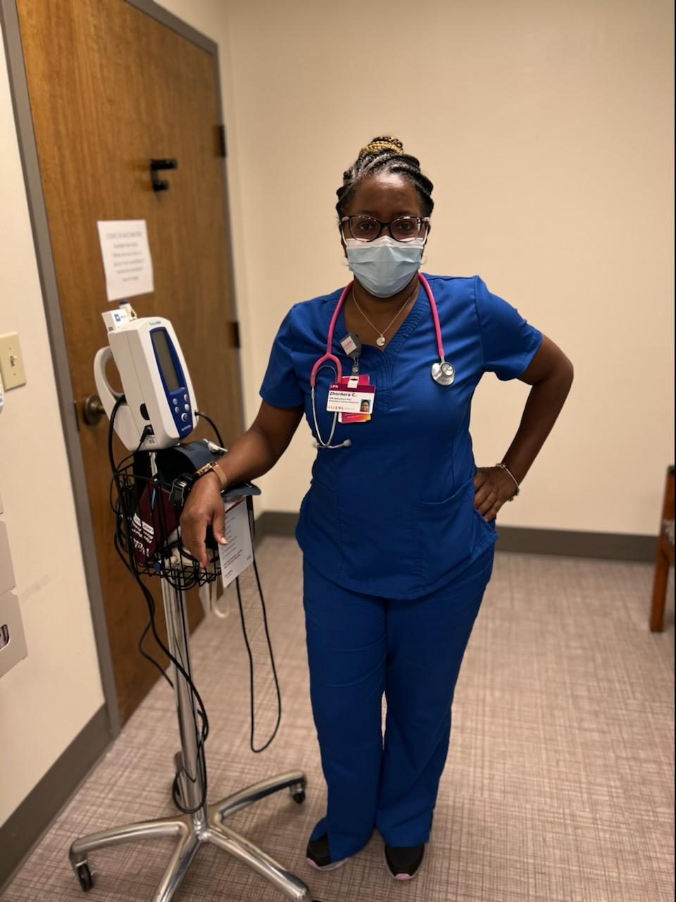
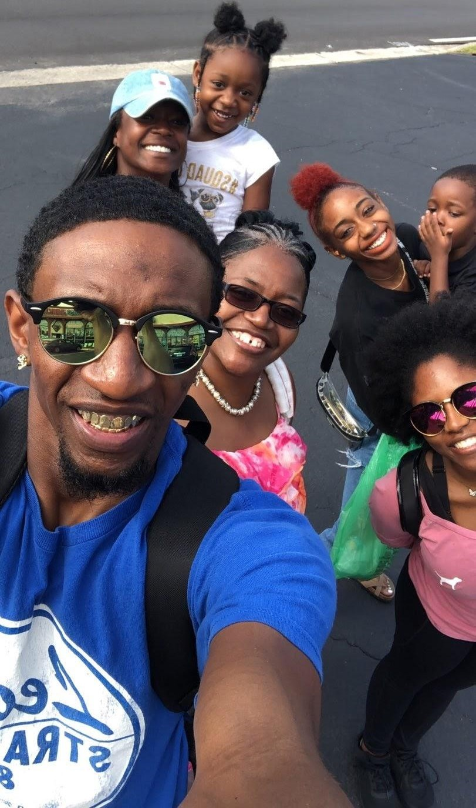
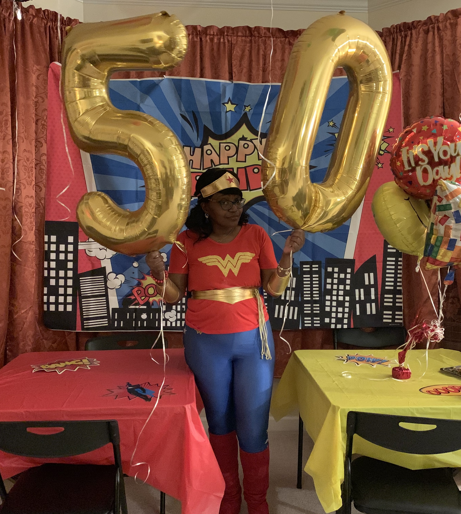

 For more than twenty-nine years of experience in nursing, Zhordera cannot imagine being in another field. Helping others is her life’s work. She takes pride exercising her oath as a nurse. She also takes pride in advocating for those in the military and veterans. Her passion for the military is extended through charity. She implores you to find it your heart to donate to organizations that aid our military and veterans. Donate Today!
 Much like her career, family is the constant in Zhordera’s life that keeps her busy and centered. She takes joy in her children whose accomplishments are some of her proudest moments. She enjoys being a grandmother to her four lovable grandchildren who keeps her snack stash empty. She can count on winding down her hectic days by focusing on those who she holds close to her heart.
 After more than two decades working in healthcare and raising three children, Zhordera hopes to buy a new home, and in a few more years, retire from nursing. Having a new home means filling it with more memories with her family. As well as having a new space to dance, watch movies, relax, and decorate to her heart's content.